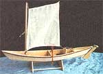
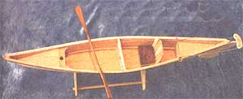
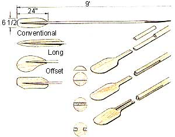
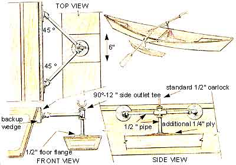
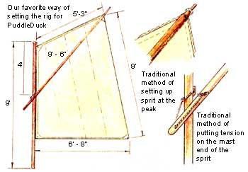
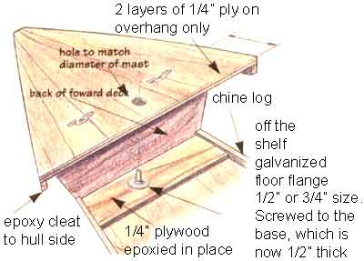
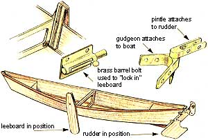

MOTHER'S WOODSHOP, PART II
On the open water with wind, motor, or muscle.
PuddleDuck is designed to be muscle-powered with a kayak-type twin-bladed paddle. You can buy one for $20 or so in plastic or (for more money) in wood. The illustration shows such a paddle you can make for about $3 worth of 1/8" to 3/8" plywood and a length of clotheshanger hardwood dowel from the hardware store. The WoodenBoat Store (see SOURCE LIST ) sells a two-part stainless-steel ferrule you can install in mid-shaft so that the paddle can be split in half for easier transport and storage.
Design your paddle to suit the arm length and strength of the paddler. A 6' length is good for small kids. An 8' to 9' total length from blade-tip to blade-tip gives an adult more purchase.
Easiest to use is a paddle with both blades set in the same plane. You just reach forward and dip one paddle in, pull that arm back, dip the other in, pull back and so on. More sophisticated is to arrange blades at 90° angles to one another. Here you must feather each blade: dip one in, pull back, drop hand at wrist to feather the blade to a horizontal position while flip ping it back and out of the water ...which sets the opposing blade at an angle to dip in ...and so on.
Make single paddles of 4' to 6' length the same way. You'll need a palm-grip at the end. Easiest is to epoxy a 4" length of dowel into a blade-parallel groove cut in the top end of the shaft with a rasp and sandpaper wrapped around a length of dowel. Carve or sand the "cross-T" to shape your hand. You can drill through the "T" and into the shaft and insert a long screw for extra good measure if you don't quite trust epoxy alone.
Before attaching blade to shaft, plane and sand 8' of the paddle-end of the shafts to taper gradually to half their thickness. Round the tips.
Attach blades by cutting a slot out of the middle of the shaft (you need pa tience and a good Japanese hand saw or some pretty sophisticated power equipment). Or cut the shape of the pointed end of the shaft out of the topcenter of the blade. Or combine the methods into the most elegant (and laborious) mechanical attachment of all and cut grooves in the shaft sides as well as a narrow slit in the center of the blade so that sides of bladeslit fit into slots in the shaft. Either way, wedge blade and shaft together with epoxy in all joints. Make an epoxy/wood-flour putty and lay fillets in the grooves. The smoother you make the paddle, the better it will function. Epoxy-"saturate" all over with one or more coats.
For more effective paddles still, before cutting slots in the blade, you can soak the lower end of the ply in a large kettle of boiling water for several minutes. Then place blade on a sturdy table, place a length of 2x4 over the end 2" and clamp 2x4 to the table. Then, wedge blade-wide boards under the other end to put a gentle curve into the blade. A propane torch applied just enough to heat, but not singe the wet blade, can help persuade the ply to bend. Let cool and dry overnight (at least) in the clamps. Sand the water-raised surfaces smooth before finishing the wood.
Be sure to set blades on the shaft so that both blades curve in the same direction! Now the back, business-face of your blade will bite in like a spoon on the power stroke, but the up-curved front will skip over the waves to help balance the boat without grabbing water.
If thin plywood blades flex enough that you fear they might break, epoxy lengths of fiberglass tape down the spine at the back of the blade and use more tape at the tips.
Old Town and a few other canoe manufacturers offer large "war canoes" intend ed for children's summer camps that are fitted with flotation chambers-sponsons-affixed unobtrusively to the boat's sides outboard of each gunwale or side-rail. The canoe loses none of its speed, maneuverability, flexibility, or tippiness...to a point. But when a gunwale threatens to dip beneath the surface, the flotation keeps it afloat.
Especially if your PuddleDuck will be carrying small kids, you should consider permanent or temporary sponsons for your boat.
Here is another place to use that infernal styrofoam packaging or laminate up two or three layers of leftover rigid house insulation. A standard household meat-cutting knife should do admirably for the job. No matter how little material you may be cutting, however, wear a protective mask. Chemically treated insulation is serious stuff. In fact, anything other than Styrofoam I would enclose in a sturdy plastic bag before installing on the boat.
Fashion 4" wide, 2" or 3" thick, halfround, split-sausage-shaped sponsons to fit under the rub rail along each gunwale. At this diameter, they should be about a yard long. Total volume/displacement of flotation is what matters, not size or shape. You can make yours from a 4"-square, 18"long block of packaging that will look less svelte but will work as well.
Attach to the hull and cover with epoxy (which bonds well to styrofoam, giving it a tough outer skin-but not to some kinds of "poly" packing). Be sure your foam is compatible with your resin before spending time shaping the foam. Better still, bind the sponsons inside lengthwise strips of fiberglass fabric or strips of tape and epoxy till smooth.
To attach the sponsons, you can imbed and epoxy or tape "C"-clamps into the foam to fit over the rub rail and gunwale for occasional use. But it is simpler to fasten them permanently to the canoe. Before taping/epoxying the outsides of the sponsons, cut holes into the inboard edges of the foam to accept a strip or blocks of soft wood every 6", and epoxy or tape them into the sponsons. Attach with rustproof screws and washers through holes in the hull and into the blocks.
In dead-fiat water, you can scull PuddleDuck with a single long oar or make a push-pole for the fiats. Make a sculling oar like a flat-bladed paddle with a 9'-to-12' shaft and a "T" handle on the inboard end. Epoxy a pair of vertical "thole pins"-6" lengths of 1 "-thick hardwood dowel-into the rear deck of a transom-equipped model PuddleDuck. Set the pins at midtransom-vertical, parallel, and a 1/2" farther apart than the paddle shaft is thick. Now you can stand in the boat and propel it forward with graceful sideto-side movements of the sculling sweep. Or make a push-pole with a "duck bill"-two flanges hinged to the off end that open when you push so they sit on top of the bottom but close when you pull so you don't lose the pole in mud or a log. You can buy metal duckbills from fishing-gear and boating supply houses.
PuddleDUCk can be rowed, but for adequate leverage you will have to build a pair of outriggers on each side to move the oarlocks a foot or more outboard the hull. You can buy sliding-seat/outrigger units that will fit into the boat for $500 to $2,500. Look for ads in the paddle-sport magazines.
For a whole lot less money, you can make your own outriggers from PVC or galvanized plumbing pipe. They can even be fitted with a pair of free-standing sponsons fashioned from quarter-size replicas of the boat hull. (See the illustration.) Make oars like 7' to 9' singlebladed paddles with rounded handles whittled to fit the paddler's hand.
Or ...Go Pond Sailing Sailing canoes were all the rage in the 'Teens and Roaring '20s, and they are regaining popularity in modern paddlesport. You can purchase sailing rigs from the same canoe and kayak makers that sell rowing rigs, but prices rise into four figures.
Making your own can be as complex or as simple as you like. An old bedsheet, folded over a 4'-long cross-spar tied to the top of a 7' tall sapling lashed to the foredeck, and with lengths of clothesline tied to each lower corner for you to hang onto will take you sailing before the wind at a surprisingly good clip.
The sprit-sail/leeboard rig illustrated is about as basic as you can get and still have a sailboat that will "tack"-or sail into the wind. For this setup you will need proper rope. (For the record, all medium-large cordage is called rope. Cut it to length and give it a job and the length of rope becomes a line. Each line has a name such as the halyard, sheet, and snotter (see illustration below).
Buy about 40' of inexpensive hardwarestore 3/8" nylon all-purpose braided rope (but not cheap clothesline). Plus a roll of 1/4" nylon cord. For the main sheet-the rope that controls the sprit sail and which you hold onto-you'll be happiest with 1/2" soft nylon from a yachting supplies outlet. T'aint cheap, but get 12' or 15' of it. The extra expense will save you a blister or two.
Rudder For before-the-wind travel you can use a paddle levered against one side or shipped into thole pins in the stern and secured there (so it won't float up and out) with cord bound in tight figure-eights around notches carved in the tops of the pegs.
But to steer and counter the sideways movement imparted by a sail moving across the wind you need a proper rudder.
Following the illustration, make the rudder from build-up forms cut from 3/8" plywood. Tape and epoxy for greatest strength and hinge from the transom using anything from proper brass or chromeplate sailboat hardware to common brass door hinges.
The most elementary sail plan you can fashion is a spritsail rig ...a four-sided sail with an angled upper margin and a spritboom (horizontal spar) that angles across the loosefooted sail.
Build a 9' or 8', 6" mast from a welldried and smoothed hardwood sapling, or make a lightweight, hollow rectangular wood mast from two lengths of 1 "-wide wood strips set 1" apart and epoxysandwiched between a facing pair of 3"-wide boards ...or build a little weightier version from 3" (inside diameter) white PVC plumbing pipe. Bolt or inset a pulley (a "block" in nautical lingo) at the top of the mast and fasten binding cleats on each side at deck-level (13" or 14" up from the bottom). To hold the "snotter," the line that holds the sprit sail's boom to the mast, affix a small pulley (to handle 3/8" rope) halfway up the front of the mast.
Install a mast step in your PuddleDuck according to the plan: a wellepoxied upper thwart with a mastsized hole in the center and a plug of wood or 2 1/2" ID plumbing pipe on a wood base and sized to slip a few inches up into the hollow mast interior. The plug is epoxied to the hull directly under the center of the hole in the thwart.
To install the step properly, set the boat level from gun'l to gun'1, and block bow and stern so a spirit-level placed on two boards set across the hull, and aligned with the stem-to-stern centerline, shows level. Block the boat so you can work inside it without its shifting.
On the inside of the hull about 6" back from the edge of your deck, and just below the gunwales, measure and mark locations of the opposing horizontal cleats that will support the mast-support-thwart so they are equidistant from the bow-peak and their lower surfaces are on the same plane-so a level set under them shows the pair of them level thwart-to-thwart and each individually level fore and aft. When epoxy holding the upper cleats is set, set ends of the mast-support thwart into a bead of epoxy troweled in underneath each cleat. Install lower support cleats in epoxy under the support-thwart and adjust so that the forward edge of each side is equidistant from the bow peak and lodged tightly against the upper cleat. Tack lower cleats in place with screws into holes pilot-drilled through cleat and into the hull. Tape edges and top and bottom of the thwart as well; it will have to withstand a good deal of stress.
Fabricate the lower part of the mast-step-the plug and its mount-as shown in the illustration. Once cured, place plug under upper support, slip mast through hole and into plug. Bed the plug into epoxy, use level to assure that the mast is vertical on all sides. Hold mast vertical and tack the plug in place with screws through at least two corners.
Use short lengths of tape and epoxy to secure all four sides of the sprit to the hull. Tape upper support and wooden cleats to hull as well.
Make the other spar-the sprit-boom-that holds the sail out to catch the air from a smaller sapling, from three 9' x 2"-wide (1 1/2" actual) lumberyard pine boards epoxied into a rectangle, or from 2" PVC tubing.
If PVC spars bend over much under sail, you can get a length of the next small er size(s) and slip inside the larger pipe. Once rigid enough, seal the ends with pipe end-caps.
Epoxy 1/2" eyebolts into both ends of the sprit. In the upper eye, secure 18" of 1/8" nylon cord or "piggin' string" to tie sail to sprit at the peak. At the mast-end, splice or loop one end of a 5' length of 3/8" rope for the "snotter."
The best materials for a small-boat sail are lightweight (4 or 6 ounce) Dacron sailcloth or 1.5 ounce Ripstop nylon. Both are uncommonly strong and tear-resistant. Dacron comes in 36" widths and Ripstop in 54" widths-both cost about $9 a yard.
Sails can be made of the cloth as it comes. Better is to split the cloth down the middle to make 16"- or 24"-wide panels (when seamed). But PuddleDuck isn't competing for America's Cup, and she'll go with any sheer, tight-woven fabric you can locate. A ripstop tarp, tent fly, or camper's ground cloth will do (and may not have to be trimmed much or at all).
Make the sprit sail from three or more panels-as indicated on the plan. Bind all edges over and sew in triangular reinforcements or "gussets" of light canvas at each of the four corners to hold grommets of metal or circles edge-bound with nylon thread so that rope passing through them won't chafe the sail. For longest sail life, sew 2" Dacron edging tape into the long, mast-side edge-the luff-and the lower edge-the foot-of the sail.
To tack, you need some sort of deep keel extension to counter the wind pressure on your sail, or the hull will be blown sideways rather than forward. Some sailboats have permanent keels; many smaller designs have a centerboard that is pushed down through a narrow, openended trunk fastened in the center of the hull. PuddleDuck is too small to sport a trunk without losing most of her cockpit area, so Will has designed a leeboard that can be pinned or lashed to the side and will serve the same purpose as a fixed keel. Big, bulbousbowed, shallow-draft Dutch sailing canal boats have two leeboards, one for each tack. PuddleDuck will sail fine with just one.
Run a 20' length of 3/8" rope through the mast-top block. To one end of this "main halyard," attach a snap-ring to fit the grommet in the upper-forward corner (the throat) of the mast-side vertical edge, or "luff " of the sail.
At the "tack" of the sail (the lower forward corner) fasten a 2' length of 3/8" rope we'll call the "downhaul."
Tie the short length of cord you fastened at one end of the boom to the grommet in the sail "peak"-the upper edge of the after margin of the sail, the leech.
Run the end of the longer rope tied to the other end of the boom through the pulley fastened halfway up the mast. This is the boom halyard or "snotter."
Pull on the main halyard to raise the sail. Secure the loose end of the line to one cleat at the foot of the mast.
Pull on the snotter until it raises the sail and cinches the peak tight. Secure the loose end to a cleat.
Pull down on the downhaul until the luff is taut, and secure the loose end to a cleat on the mast.
Now, get in, grab the main sheet and the tiller and shove off. Lower the leeboard when water is deep enough. When you feel the wind, haul in on the sheet until the sail fills, apply rudder pressure away from the direction of a crossing or head-on wind and you're sailing! Keep the sheet tight enough so that the sail does not flutter or luff-another meaning for the word just to confuse you even more.
To change tacks, pull on the sheet and turn the rudder away from the wind so the boat "comes around"-so the bow passes through the wind briskly. As wind fills the sail from the other direction, pay out the sheet and apply opposite rudder.
When you turn away from the wind so that it comes at you from the side, you are on a "broad reach" and you will really go like the wind! Watch your angle or "heel" lest the lee rail goes under and you ship water.
To go downwind off a tack or reach, turn the rudder gradually into the wind and hold on as the boat turns, the sheet pays out and the sail fills. Whee! You may want to shift weight to the rear as speed increases so the bow will stay up.
Always keep wind pressure on the sheet-hauling in quick when wind goes slack-and you won't get snap boom swings or "jibes"-when the sail swings through a following wind. And you can find yourself enveloped in canvas or even pushed overboard.
Never be tempted to tie the sheet fast. Hand-hold it always so you can loosen the line and spill a sudden wind gust that is strong enough to lay PuddleDuck over so far that her rail goes under or the sail decides to take a dip ...and take you swimming with it! . . .
The lazy way to power your small craft is to put a small gas-powered "kicker" engine or an electric-trolling motor on the transom-sterned model. PuddleDuck would sink stern first with a 35-horse power waterskiing-size gas engine or even a big 40-pound thrust electric troller and its deep-cycle battery. But, a two horse power, single-cylinder putt-putt or a twopound thrust electric will move her along just fine.
You'll find little "antique" air-cooled gas engines and used electric trolling motors advertised in the Outdoor Sport Classifieds for $25 to $50. A new electric motor costs only $75, and a motorcycle battery and small charger will cost about the same, new, or used. So, for $50 and up you can cruise under power with the cheery "putt-putt-putt" of a kicker or, in the pristine silence of an electric. Either way, you will travel at the elegant, deliberate pace of an earlier era. Build a lightweight canopy frame from PVC plumbing pipe, make a fringed canopy from white rayon and pack a lunch in a wicker basket to complete the turn-of-the-century motif.
You will have to experiment to find what depth to set the motor on its adjustable column and where to locate an electric motor's battery and your own weight for best balance and speed. You will probably be too far forward to steer with the motor's handle. You can use stainlesssteel hose clamps to affix a long centerhinged steering tiller that you operate over one shoulder. Or, tie ropes to the handle so they run off to each side of the engine, pass through pulleys on the transom, up to your seating position ...and you can steer by remote control.
You can even steer with your feet using a treadle-an 18"-long board loosely bolted to the keel out in front of you. Fasten the steering ropes to each end. (This will work with the sail rig too.)
You'll need a seat with a back (a canoe chair or plastic kiddie chair with legs removed) so you can lean back and really take it easy under power or sail.
Always be sure to carry your paddle, though ...just in case wind, gas, or electric power runs short of getting you home.
|
 Will Shelton, who co-designed PuddleDuck, outdid himself (as usual) by showing up one day with a scale model of Mother's small boat that he whipped up one morning. We couldn't resist showing it to you. |
 |
 |
|
 |
 |
 |
|
 |
|
|